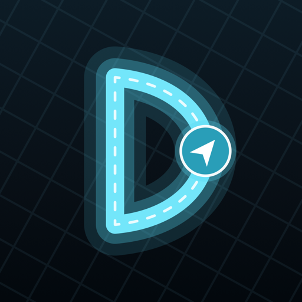

The Self-Driving Journal.
Mount your phone, start a drive, and log disengagements, interventions, hesitations, and highlights in one tap, with the exact street and second attached to every event.
Join the Beta on TestFlightRequires iOS 26 · Free during beta
Four big glass buttons made for a mounted phone. Tap, keep your eyes on the road, and add a quick voice note that transcribes itself.
Watch any drive back with a follow camera, tap through events on the timeline, and see exactly where the car hesitated.
Turn a drive's events into timeline markers for Final Cut Pro, Premiere Pro, or DaVinci Resolve, aligned to your camera footage and ready to cut.
Every drive stays on your iPhone. No account, no servers, no analytics. Your data never leaves your device.